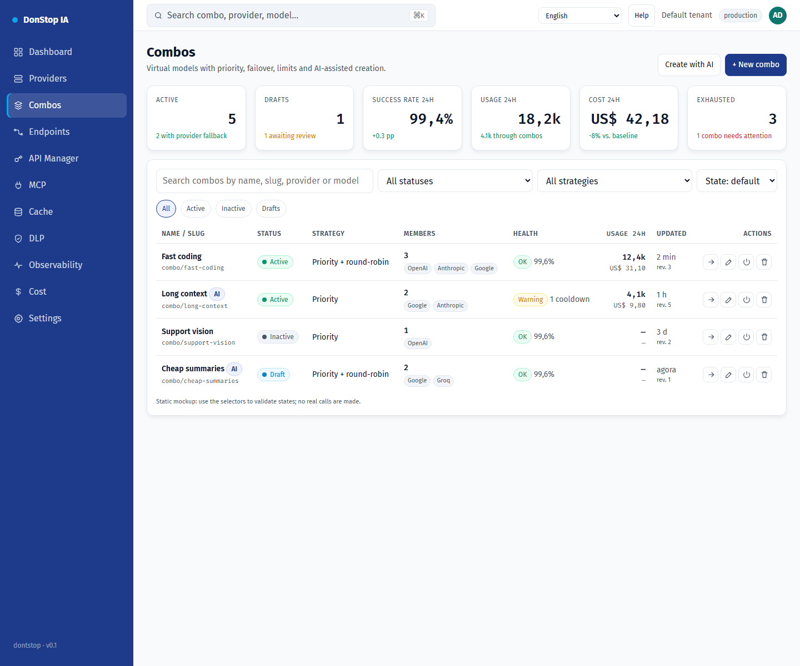

Combos

What it does
Creates and operates virtual models made of provider models, with priority, failover, limits and AI-assisted drafting.
When to use
Use this screen when you need to inspect, configure or operate this part of the gateway.
Step by step
- Open Combos from the sidebar.
- Review the indicators and the main table.
- Use the actions described below; changes take effect immediately.
- Create manually or with AI, review members and warnings, validate, then save and activate explicitly.
Fields and actions
| Field or action | Label or action visible on this screen. |
|---|---|
| Status | Label or action visible on this screen. |
| Edit | Label or action visible on this screen. |
| Test | Label or action visible on this screen. |
| Close | Label or action visible on this screen. |
Combos and AI
A combo is a virtual model named combo/<slug>. It tries its members by tier and fails over before the first streamed chunk. When a member fails, the next eligible member is attempted; 400/413/422 stop the request. The AI assistant reads the real catalog and produces a draft only: it never saves or activates a combo. Review warnings, validate, then save and activate explicitly.
Common errors and states
- If data fails to load, retry. If the error persists, check the gateway and provider status.
- If an action is disabled, confirm your role and the tenant scope.
- Empty states are expected before the first request; follow the call to action.
Related guides
Screenshot of the Combos screen in English.